i.Conférence
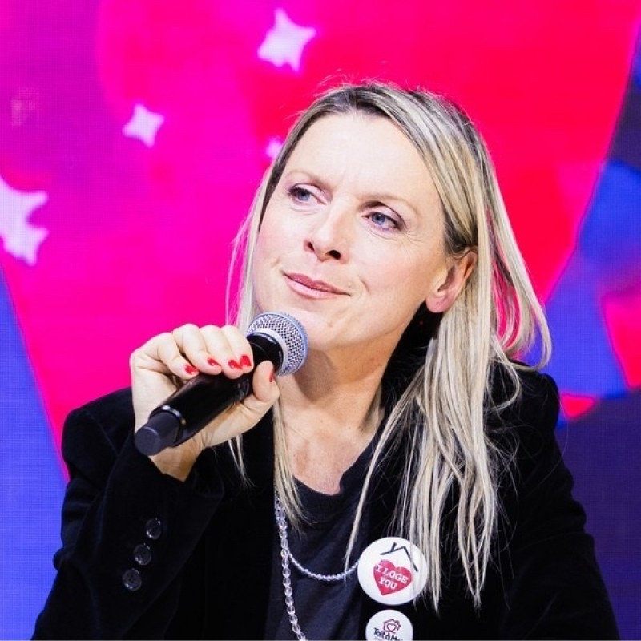
Vingt ans à orchestrer la voix des marques de l'immobilier — de la donnée brute jusqu'à la une.
La relation presse n'est pas une question de communiqués. C'est un travail d'orfèvre sur la donnée, la temporalité et le regard. C'est savoir transformer un chiffre en récit, un mouvement de marché en conversation, une marque en référence. Depuis 2003, j'accompagne les acteurs de l'immobilier — portails, réseaux, start-ups — pour qu'ils trouvent leur juste place dans le débat public.
Une agence-boutique pensée comme un studio éditorial. Au service des réseaux, portails et start-ups qui veulent porter une parole forte, juste et entendue dans l'écosystème immobilier.
Membre du comité de direction. Refonte de la stratégie média et publique d'un des plus grands réseaux français de franchise immobilière.
Pilotage des relations presse pour SeLoger, Logic-Immo et Bureaux & Commerces. Redéfinition du rôle des RP dans le secteur — la donnée devient récit, le récit devient autorité.
Onze années à la tête de la communication d'un des premiers portails immobiliers français. Construction d'une expertise unique sur la rencontre entre data immobilière et récit public.
Premiers pas dans l'univers du portail immobilier qui deviendra Logic-Immo. Apprentissage du métier par tous les bouts — du terrain commercial à la communication.
Audit de notoriété, cartographie des prises de parole, arbitrage des angles. La stratégie se construit, s'évalue, se rejoue à six mois.
Transformer la donnée brute en preuve, en angle, en titre. La data ne vaut rien si elle n'est pas modelée — elle devient alors un actif éditorial décisif.
Un réseau patiemment construit avec les rédactions économiques, immobilières et grand-public. Chaque journaliste mérite la bonne histoire, au bon moment.
Media training, entraînement à la prise de parole, écriture des arguments. Pour que le dirigeant devienne la meilleure vitrine de sa marque.
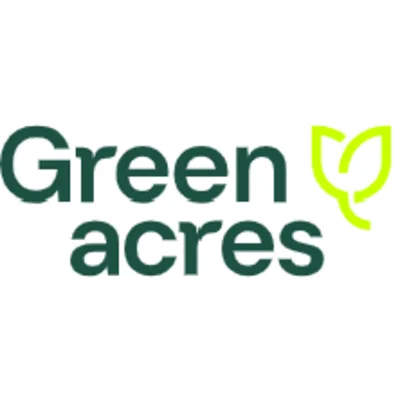
Trois actes d'un même observatoire. Une voix posée sur la résidence secondaire, devenue référence média en l'espace d'une saison.
Lancement de l'Observatoire L'Immobilier Plaisir · Acte III
20 mars 2026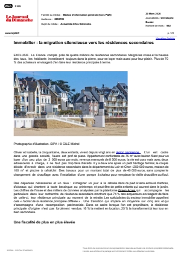
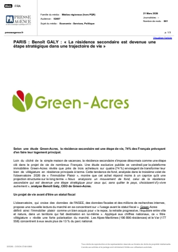
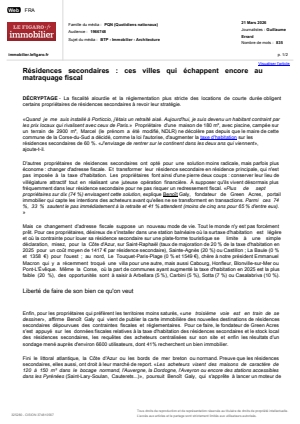
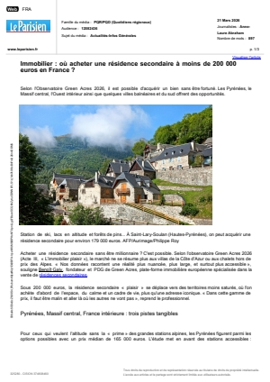
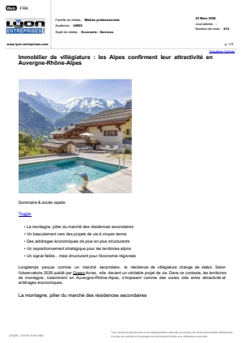
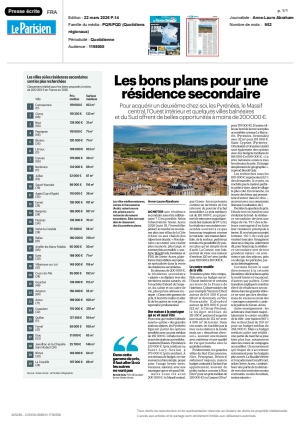
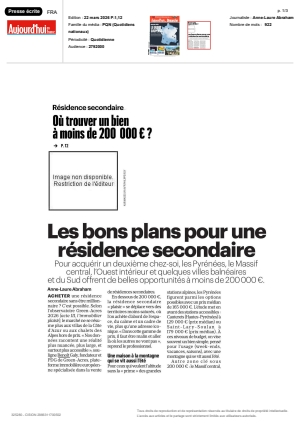
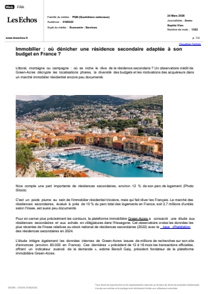
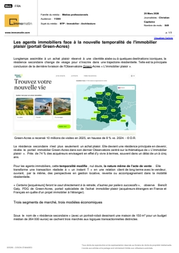
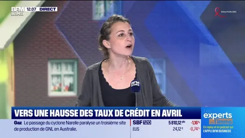
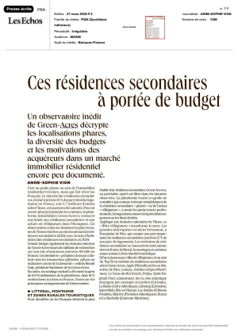
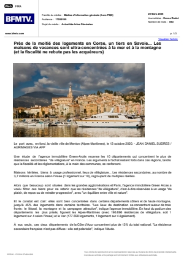
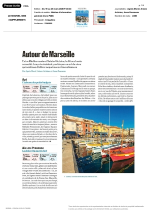
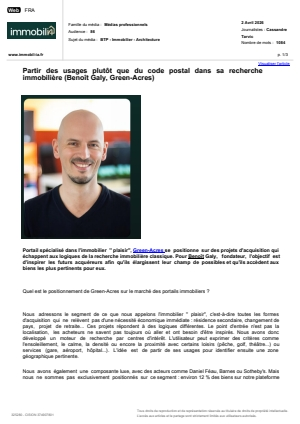
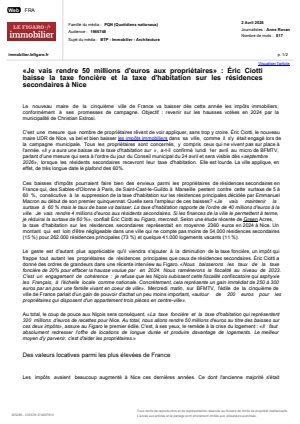
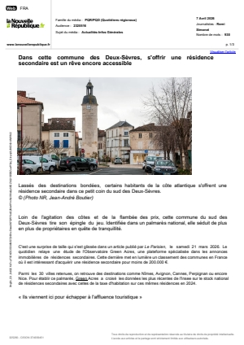
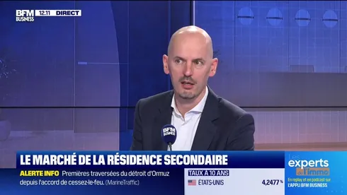
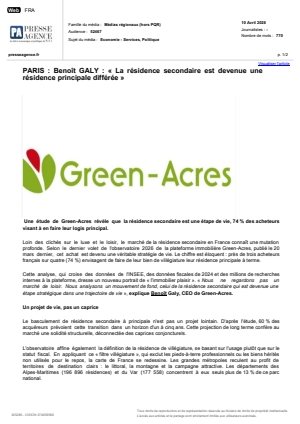
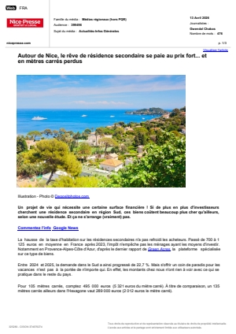
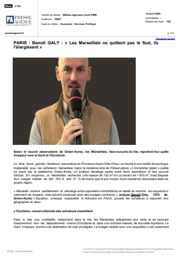
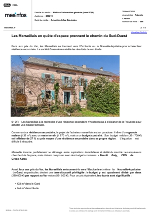
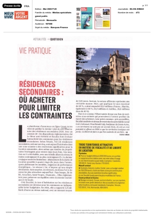
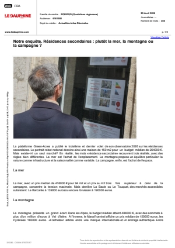
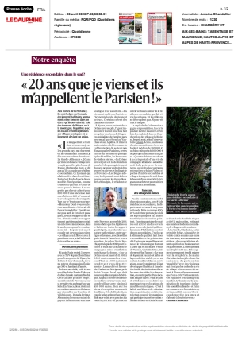
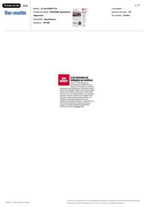
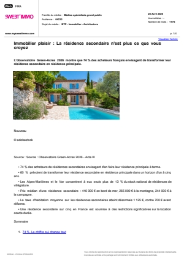
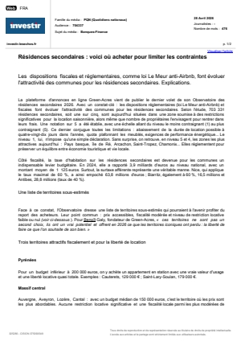
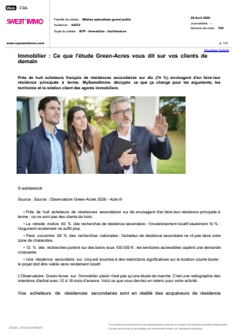
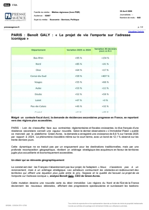
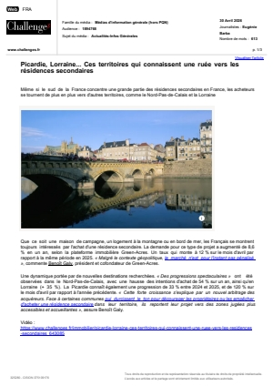
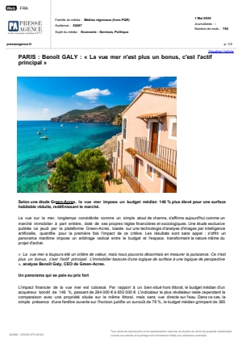
Grâce à l'approche de Séverine Amate, nous sommes passés en un an de site réputé sur notre segment de marché à interlocuteur de référence des journalistes pour parler de résidences secondaires.